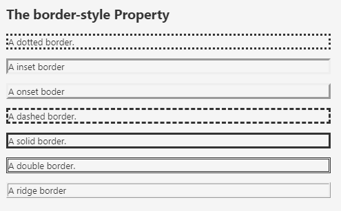
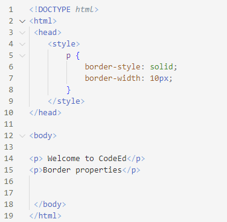

CSS BORDERS
CSS border attributes allow us to customize the border's style, color, and width.
Note: that separate properties can be specified for each border, such as top border, right border, bottom border, and left border.
Border Style
The border-style property specifies the type of border.
None of the other border properties will work without setting the border style.
Type of Borders
- dashed
- solid
- dotted
- double
- groove
- ridge
- inset
- outset
- hidden
- none
 Output:
Output:

Border width
The width of the border is determined by the border width. The border width can be specified in px, pt, cm, or thin, medium, and thick.
Example: 
Output:
Border color
This properties is used to change the border color. The color name, hex value, or RGB value can all be used to set the color. If no color is supplied, the element's color is used.
Example:

Output:
Border individual size
We may offer width, style, and color to all the borders independently using the border property, but we must give certain values to all sides of the border.